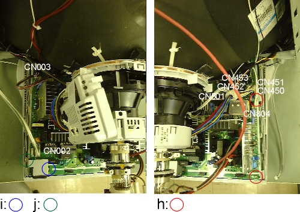

ASSY PCB-MAIN Removal

Connect the earth before servicing the PCB-MAIN.
When servicing the PCB-MAIN with the BASE taken OFF, securely
connect the HOLDER-L, R to the GND on the secondary voltage line
with leads before turning the power switch ON. If not, the high
voltage put into the monitor will not discharge from the CRT.
This will result in electric shock or damage. |

|
When removing Anode Cap from the CRT, read the precautions and
discharge the high voltage completely. |
- Remove the ASSY VIDEO UNIT.
- Take off the Anode Cap from the CRT.
- Remove the PCB-CRT from the CRT neck.
- Pull out 7 connectors (CN002, CN003, CN450, CN451, CN452,
CN453. CN501, CN804) from the PCB-MAIN.
- Remove 4 screws (h, i, j) , from the PCB-MAIN.
- Slide and remove the PCB with the PCB-CRT.
- Remove 1 screw (k) holding the PCB-MAIN and the frame (PCB-FRAME-N).
- Pull out 2 stoppers of the frame to remove off the frame
from the PCB.

|
When attaching the PCB, do not put the PCB-MAIN under the front
stopper. |
|